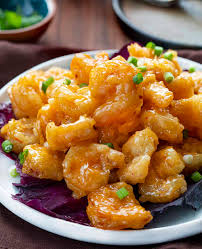

Bang Bang Shrimp

Description
It's crispy shrimp tossed in a creamy, spicy sauce.
Ingredients
- 1/2 cup mayo
- 1/4 cup Thai-style sweet chili sauce
- 3 dashes of Sriracha, or to taste
- 1/2 cup cornstarch, or as needed
- 1 pound medium devained and peeled shrimp
- Oil for frying
- 8 lettuce leaves
- 1 bunch of green onions, chopped or to taste
Steps
- Whisk mayonnaise, sweet chile sauce, and Sriracha hot sauce together in a bowl. Set aside.
- Place cornstarch in a shallow bowl. Gently press shrimps into cornstarch to coat; shake off any excess.
- Heat oil in a deep-fryer or large saucepan to 375 degrees F (190 degrees C).
- Working in batches, cook the shrimp until they are lightly browned on the outside and no longer transparent in the center, about 3 to 5 minutes.
- Transfer shrimp to paper towels to drain.
- Put cooked shrimp in a bowl and pour chile sauce mixture over the shrimp; toss gently to coat.
- Line a serving bowl with lettuce leaves. Pour shrimp into bowl and top with chopped green onion.